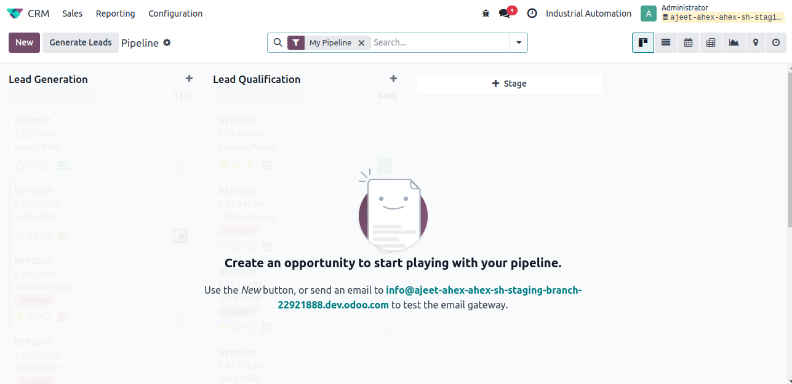
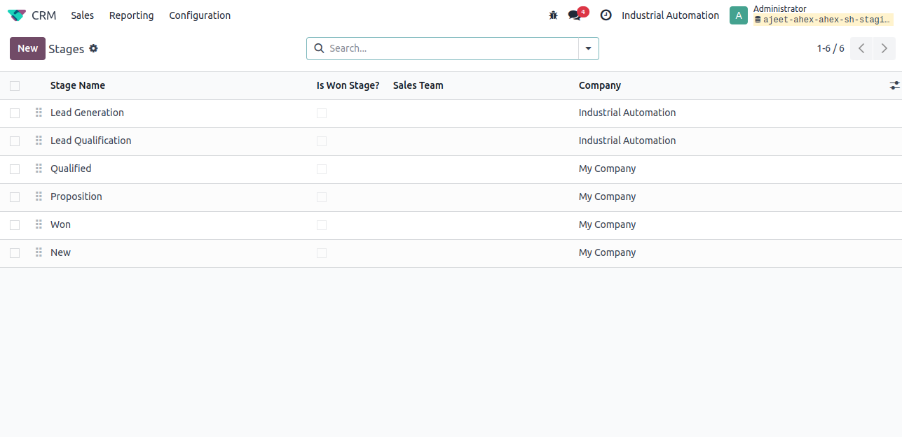

Before Creating the stages select company in which you need to modify the stages,once you add the stages it will automatically maps to the current company and reflects in the List view also

Flow the below steps to get the stages from the menu:
- Go to configuration-->pipeline -->stages
- You can group by company and check the stages company wise
